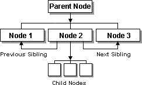

| ||
The Document Object Model (DOM) is a platform- and language-neutral interface that permits script to access and update the content, structure, and style of a document. The DOM includes a model for how a standard set of objects representing HTML and XML documents are combined, and an interface for accessing and manipulating them. Web authors can use the DOM interface in Microsoft® Internet Explorer 5 and later to take advantage of this dynamic model.
The key advantages of the DOM are the abilities to access everything in the document, to make numerous content updates, and to work with content in separate document fragments. Working together with the Dynamic HTML (DHTML) Object Model available as of Internet Explorer 4.0, the DOM enhances a Web author's ability to build and manage complex documents and data. Many tasks, such as moving an object from one part of the document to another, are highly efficient and easy to perform using DOM members. This document discusses the implementation of the DOM interface available in Internet Explorer 5 and later. See the Related Articles section for links to more information on the DOM and DHTML.
An object model is a mechanism for accessing and programming a document or program. The DHTML Object Model, available in Internet Explorer 4.0, provides access to almost all elements, and to all attributes on an element. Every element is exposed to the DHTML Object Model in Internet Explorer 5 and later. The Document Object Model is consistent with the DHTML Object Model in that every element and every attribute is accessible in script.
The Document Object Model is a robust evolution from the DHTML Object Model because it provides a structured model and logical interface for authors to access and update elements and attributes. Authors who are familiar with the DHTML Object Model or scripting object models should find the Document Object Model implementation fairly straightforward to use. Those unfamiliar with object models in general, or the DHTML Object Model, are encouraged to read the DHTML Object Model article.
Using the DOM has many advantages for manipulating the document tree. With the DOM, content authors can:
The ability to move a part of the document tree without destroying and recreating the content reduces the size of script and is more efficient. Consider the following HTML that creates an unordered list using the UL and LI elements.
<UL ID="oList" onclick="fnShuffleItem()"> <LI>Item 1 <LI>Item 2 <LI>Item 3 <LI>Item 4 <LI>Item 5 <LI ID="oItem">Shuffle Item
Using the DHTML Object Model, shuffling the last list requires destroying and recreating each item. Before the LI element is destroyed, the outerHTML values are recorded so they can be recreated. By keeping track of the index of the element in the children collection, the location of two list items are exchanged. The following sample code shuffles the list.
window.onload=fnInit;
var iShuffle;
function fnInit(){
iShuffle=oList.children.length-1;
}
function fnShuffleItem(){
var oChildren=oList.children;
if(iShuffle<=0){
iShuffle=oChildren.length-1;
var sData=oChildren[0].outerHTML;
oChildren[0].outerHTML="";
oList.innerHTML+=sData;
}
else{
var sSwap1=oChildren[iShuffle-1].outerHTML;
var sSwap2=oChildren[iShuffle].outerHTML;
oChildren[iShuffle-1].outerHTML=sSwap2;
oChildren[iShuffle].outerHTML=sSwap1;
iShuffle--;
}
}
Using the DOM, the same effect is achieved by exchanging the position of the two list items in the document tree hierarchy using the swapNode method. In this example, the item that is shuffled is swapped with the previous item. Rather than query the children collection of the list, the previous irem is determined with the previousSibling property. The following sample code shuffles the list item using the DOM swapNode method.
window.onload=fnInit;
var oShuffle;
function fnInit(){
oShuffle=oList.lastChild;
}
function fnShuffleItem(){
var oSwap=oShuffle.previousSibling;
if(!oSwap){
oSwap=oList.lastChild
}
oShuffle.swapNode(oSwap);
}
The DOM interface in Internet Explorer allows authors to access different nodes of the document tree. A node is a reference to an element, an attribute, or a string of text. To implement the DOM members, authors should understand the conceptual layout of the document tree and the relationship that nodes have with one another. While the DOM provides a streamlined approach to completing tasks that are viable under the DHTML Object Model, it does not implement all of the DHTML Object Model members, particularly events. This section describes implementing the DOM by navigating, creating, and manipulating nodes. It also provides a comparison between the DOM and the DHTML Object Model.
Among the DHTML properties, methods, and collections elements exposed as of Internet Explorer 5 are several DOM-specific members that represent the DOM interface. The following table outlines these members.
| Properties | |
|---|---|
| data | Specifies the value of a TextNode. |
| firstChild | Returns the first child node in the childNodes collection. |
| lastChild | Returns the last child node in the childNodes collection. |
| nextSibling | Returns a reference to the next child of the parent for the specified object. |
| nodeName | Returns the name of the element, similar to the tagName property. |
| nodeType | Returns whether a node is an element, text node, or attribute. |
| nodeValue | Returns the value of a node. |
| parentNode | Returns a reference to the parent node. |
| previousSibling | Returns a reference to the previous child of the parent for the specified object. |
| specified | Returns whether an attribute value is set. |
| Methods | |
| appendChild | Appends an element as a child to the specified object. |
| applyElement | Makes the element a child of the object passed as a parameter. |
| clearAttributes | Removes all attributes and values from the specified object. |
| cloneNode | Copies a reference to the object from the document hierarchy. |
| createElement | Creates a new instance of the specified element. |
| createTextNode | Creates a new text node from the specified string. |
| hasChildNodes | Returns whether the specified object has children. |
| insertBefore | Inserts an object into the document hierarchy. |
| mergeAttributes | Copies all read/write attributes to the specified object. |
| removeNode | Removes a node from the document hierarchy. |
| replaceNode | Exchanges an existing object with another element. |
| swapNode | Exchanges the location of two objects in the document hierarchy. |
| Collections | |
| attributes | Returns the collection of attributes for a particular object. |
| childNodes | Returns a collection of child nodes for the specified object. |
Identifying a particular node is easy if a Web author knows the ID of the element. Finding an adjacent element, or locating an element in relation to another, can be more difficult. The DOM exposes several properties and collections that identify a node, and the relationship a node has with other nodes.
The following HTML demonstrates a tree structure built from a UL element.
<UL ID="oParent">
<LI>Node 1
<LI ID="oNode">Node 2
<UL>
<LI>Child 1
<LI ID="oChild2">Child 2
<LI>Child 3
</UL>
<LI>Node 3
</UL>
Given a reference to a node in the list where the ID is oNode, the DOM members can be used to identify the adjacent, parent, and child nodes. Since elements and text exist as nodes, they are accessible through the DOM. The following code identifies the basic structure of the specified node, oNode.
<!-- oParent is the parent node of oNode --> <UL ID="oParent"> <!-- oNode is the childNode of oParent.--> <LI ID="oNode"> <!-- Node 2 is a text node and is a child of oNode.--> Node 2 </UL>
The UL and LI elements are exposed in the DHTML Object Model. However, the text is only directly accessible as a node in the DOM. Use the following diagram to identify the hierarchy of the list.

The first three LI elements, labeled Node 1, Node 2, and Node 3, are the child nodes of the first UL element, oParent (Parent Node). The child nodes collection is exposed to oParent as childNodes, and contains Node 1, Node 2, and Node 3. As child nodes, these three LI elements return oParent as the parent node through the parentNode property. Node 1, Node 2, and Node 3 are siblings and are exposed to each other through the previousSibling and nextSibling properties. Node 2 exposes a childNodes collection that contains three unlabeled LI elements.
The following sample is an interactive tree that provides the same information as the previous diagram. It allows some experimentation with identifying the relationships of selected nodes and introduces tree manipulation.
The DOM and DHTML Object Model provide a means to query a specified node to determine its location in the document hierarchy and its relationship to other nodes. Using the previous unordered list, querying the oNode object is compared between the DOM and the DHTML Object Model as follows:
var oParent = oNode.parentNode
var oParent = oNode.parentElement
var oPrevious = oNode.previousSibling
var oPrevious = fnGetSibling();
function fnGetSibling(){
var oParent=oNode.parentElement;
var iLength=oParent.children.length;
for(var i=0;i < iLength;i++){
if(oParent.children[i]==oNode){
return oParent.children[i - 1];
break;
}
}
}
oNode.childNodes[0].nodeValue="The new label";
oNode.innerHTML="The new label";
Notice the similarities and differences between querying the DOM and the DHTML Object Model. First, the parentElement and parentNode properties return the same element for this sample. Second, finding the previous sibling using the DHTML Object Model is more tedious than simply using the previousSibling property exposed in the DOM. And third, notice that the text is treated as a node in the DOM and is accessible through the childNodes collection. An important distinction about a textNode is that it cannot contain any child nodes.
Nodes are created using the createElement and createTextNode methods. Both methods are exposed only to the document object, and can be used in HTML documents, DHTML Behaviors, and HTML Applications. In the DHTML Object Model, elements are added to the document hierarchy by modifying the innerHTML and outerHTML property values, or by using methods explicit to particular elements, such as the insertRow and insertCell methods for the TABLE element. With the createElement method, only the name of the element is needed.
Use the following syntax to create a new element.
// Create an element var oElement = document.createElement(sElementName);
The createElement method is available in Internet Explorer 4.0, but only the AREA, IMG, and OPTION elements can be created. As of Internet Explorer 5, all elements can be created stand-alone. In addition, read-only properties, such as id, are read-write for stand-alone elements before they are inserted into the document hierarchy. Some elements might require additional steps or rely on the existence of other elements. For example, the TYPE attribute of the INPUT element defaults to text. So, to create a button control, the type property needs to be set to button, and the value property should be set to provide a label.
The following sample code highlights how a FIELDSET, LEGEND, and button control are created in script to build a short form. Notice that one function is designed to create and append the elements, and a reference to the new element is returned so additional elements can be appended as children.
function fnCreate(sElement,sData,sType,oNode){
var oNewElement=document.createElement(sElement);
if(sType){
oNewElement.type=sType;
oNewElement.value=sData;
}
if(sData){
if(sElement.toLowerCase()!="input"){
var oNewText=document.createTextNode(sData);
oNewElement.appendChild(oNewText);
}
}
if(oNode){
oNode.appendChild(oNewElement);
}
else{
oNewForm.appendChild(oNewElement);
}
return oNewElement;
}
var oNode=fnCreate("FIELDSET");
fnCreate("LEGEND","My Form","",oNode);
fnCreate("INPUT","Some Text","text",oNode);
fnCreate("INPUT","A button","button",oNode);
When creating and threading together nodes, it is important to use well-formed HTML to avoid creating an invalid tree. By creating and adding an invalid tree into the document hierarchy, unpredictable behavior can ensue. For the most part, Web authors need not be concerned. However, there are some elements, such as TABLE, that warrant special discussion.
A well-formed HTML table consists of at least two nodes: TABLE and TBODY. In the DHTML Object Model, a TABLE, with accompanying rows and cells, can be created using the innerHTML property, the insertRow and insertCell methods, and the rows and cells collections. While the TBODY element is not explicitly added, it is created as a part of the table object model. For example, the following code generates a two-cell table using the DHTML Object Model.
var sTable="<TABLE ID='oTable1'></TABLE>" document.body.innerHTML+=sTable; oTable1.insertRow(oTable1.rows.length); oTable1.insertRow(oTable1.rows.length); oTable1.rows(0).insertCell(oTable1.rows(0).cells.length); oTable1.rows(0).insertCell(oTable1.rows(0).cells.length); oTable1.rows(0).cells(0).innerHTML="Cell 1"; oTable1.rows(0).cells(1).innerHTML="Cell 2";
The following HTML is the result of the previous code. Notice that the TBODY element exists even though it was not added in script.
<TABLE ID="oTable"> <TBODY> <TR><TD>Cell 1</TD><TD>Cell 2</TD></TR> </TBODY> </TABLE>
To create a well-formed table in the DOM, the TBODY element must be explicitly created and added to the tree. By not including the TBODY element, the nodes comprising the entire table form an invalid tree and result in unpredictable behavior. The following script outlines the creation of a table using the DOM, including the TBODY element.
var oTable=document.createElement("TABLE");
var oTBody=document.createElement("TBODY");
var oRow=document.createElement("TR");
var oCell=document.createElement("TD");
var oCell2=oCell.cloneNode();
oRow.appendChild(oCell);
oRow.appendChild(oCell2);
oTable.appendChild(oTBody);
oTBody.appendChild(oRow);
document.body.appendChild(oTable);
oCell.innerHTML="Cell 1";
oCell2.innerHTML="Cell 2";
Once a node is created, and its relationship with other nodes is identified, it can be manipulated. A node can be updated without any knowledge of what nodes are adjacent to it, but it is a good idea to know what could be affected if a node is altered. For example, if a Web author wants to remove portions of a list, removing the topmost node and all its children might delete information that should have been preserved. In addition, removing only the topmost node of a list might cause additional problems later because the existing list items would still exist, without the OL or UL parent.
Some of the DOM methods that allow authors to easily manipulate nodes are the cloneNode, removeNode, replaceNode, and swapNode methods. These methods provide copy, move, and delete functionality to the entire document tree. Understanding how a node interacts with other nodes helps keep a document clean and the client-side script stable. For example, consider the following list code.
<UL ID=oParent> <LI>Item 1 <LI ID=oNode2>Item 2 <OL ID=oSubList> <LI>Sub Item 1 <LI>Sub Item 2 <LI>Sub Item 3 </OL> <LI>Item 3 </UL>
Manipulating nodes can be tricky because it is very easy to build invalid tree structures. For example, to copy one of the list items represented in the previous HTML and paste it at the bottom of the list, the new node should be appended to the parent, oParent, not the last list item. By appending the node to the last list item, the new node becomes a child of oParent, not a sibling to the other nodes. The converse is also true for appending children to each list item. If a new sublist is created and appended to oParent, it becomes a sibling to the other list items, not a child of a particular list item.
To create a new sublist of three items, one new OL element and three new LI elements can be created and appended to the last list item. However, since this structure already exists, it can be copied with the cloneNode method. By passing true as a parameter to the method, the children are cloned as well. The following code demonstrates how the entire sublist is copied and appended to the last list item.
var oClone=oSubList.cloneNode(true); oParent.childNodes[oParent.childNodes.length-1].appendChild(oClone);
The replaceNode and swapNode methods are used to exchange a node with one in the document hierarchy. The difference between these methods is that replaceNode removes the node that invokes the method from the document hierarchy, and swapNode moves the node that invokes the method to the position of the incoming node. The following sample code highlights the use of both methods.
<SCRIPT>
window.onload=fnInit;
function fnInit(){
var oNewPara=document.createElement("P");
var oText=document.createTextNode("This is the new paragraph");
oNewPara.appendChild(oText);
document.body.appendChild(oNewPara);
// Paragraph 2 is replaced with the new paragraph
oP2.replaceNode(oNewPara);
// The position of paragraph 1 is exchanged with the new paragraph
oNewPara.swapNode(oP1);
}
</SCRIPT>
<P ID=oP1>This is the first paragraph</P>
<P ID=oP2>This is the second paragraph</P>
The ability to manipulate nodes allows authors to perform complex operations on the document without rewriting the content. Speed and efficiency are gained by working directly with the document tree. Being able to navigate and identify nodes, create new nodes, and manipulate existing nodes prepares authors to make the most of their creativity and ingenuity when developing dynamic documents.
The DOM adheres to the same security restrictions as the DHTML Object Model and is subject to the cross-frame security rules of Internet Explorer. In addition, the same scripting security still applies.
Did you find this topic useful? Suggestions for other topics? Write us!
© 1999 Microsoft Corporation. All rights reserved. Terms of use.